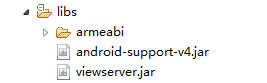

- Introduction
- 1. iOS 开发
-
2.
Android 开发
- 2.1. 架构设计
- 2.2. Android平台配置
- 2.3. Android开发入门
- 2.4. Android高级开发
-
2.5.
Android高级功能使用
- 2.5.1. Android离线1版本使用指南
- 2.5.2. Android离线2版本使用指南
- 2.5.3. Android离线3.0版本使用指南
- 2.5.4. Android离线4.0版本使用指南
- 2.5.5. Android离线4.0版本 - Websocket下载 - 使用指南
- 2.5.6. Android EMP5.2离线模块移植到5.1的解决方案
- 2.5.7. Android统计分析使用指南
- 2.5.8. Android附件阅读使用指南
- 2.5.9. Android二维码使用指南
- 2.5.10. Android图表使用指南
- 2.5.11. Android国际化使用说明
- 2.5.12. Android异常本地查看说明
- 2.5.13. Android高德地图使用说明
- 2.6. migrate
- 2.7. Release Note
- 3. WP 开发
- 4. QT 开发
- Published using GitBook
Android平台客户端开发基础
工程总览
新开发一个项目，我们会拿到如下图的工程项目代码。

1 Src文件夹下各包概述
1.1 Com.rytong.emp.test包
我们的产品，只有一个Activity，不同的页面在这个Activity上刷新控件。而这个唯一的Activity，MainActivity便位于此包中。
2 Lib文件夹中包含jar包概述

2.1 Armeabi文件夹
此文件夹中包含的是C的类库，我们有些代码或者第三方程序是用C实现的，需要编译成C动态库让Java调用，比如lua，防篡改的功能。
2.2 其他jar包用途
viewserver 用于开发时图形化查看视图布局
LUA脚本模块
位于EMP工程包package com.rytong.emp.lua下。后台使用lua脚本以及libs/armeabi下的libluajava.so库控制客户端的一系列操作。
1 重力感应
LuaAccelerometer：控制重力感应的开启、关闭、以及数据获取。
2 帧动画操作
LuaAnimation：通过结合res文件夹下aim文件夹内存放的动画XML文件，使客户端实现固定的动画效果。
3 音频操作
LuaAudio：控制音频文件的播放、暂停、停止等操作。
4 数据库操作
LuaDatabase：操作SQLite的增、删、改、查。
5 页面操作
LuaDocument：根据指定的标示获取相应的界面元素（控件等）。
6 文件操作
LuaFile：操作文件的读、写、删除等。
7 手势控制
LuaGesture：可设置手势的监听，通过手势进行一些列的操作。
8 GPS操作
LuaGPS：控制GPS的开启与关闭，以及位置信息等。
9 界面缓存
LuaHistory：对界面报文数据进行缓存，以节省返回操作的请求时间以及流量消耗。
10 网络请求
LuaHTTP：可进行方法回调请求等。
11 JSON数据处理
LuaJson：对后台提供的json数据进行解析和组装。
12 界面刷新
LuaLocation：提供页面局部更新常用到的replace等方法。
13 控件操作
LuaMetatable：提供接口操作控件，设置获取属性样式等。
14 离线资源
LuaOffline：提供离线资源的检查更新和资源下载。
15 设备屏幕信息
LuaScreen：获取设备屏幕的宽、高、密度等数据。
16 系统信息
LuaSystem：可获取设备的型号，并提供接口起调某个系统APP的界面，如短信、拨号等。
17 计时器
LuaTimer：启动计时器，并回调lua方法。
18 补间动画
LuaTransition：通过模板数据指定的便宜位置等，实现可变的动画效果。
19 工具类
LuaUtility：提供编码处理、一次一密等功能的接口。
20 视频操作
LuaVideo：控制视频文件的播放、暂停、停止等操作，还可控制播放窗口的位置。
21 对话框操作
LuaWindow：主要用于提交Form表单数据lua校验数据格式的错误提示。
控件处理模块
位于EMP工程包package com.rytong.emp.gui.atom下。
1 超链接控件
A ：自定义TextView，实现超链接功能。
2 粗体文字控件
B ：自定义TextView，实现文字粗体功能。
3 body控件
Body ：绝对布局实现。
4 换行标志控件
Br ：用于控件排版的换行。
5 div控件
Div ：绝对布局实现。
6 地图控件
DivMap ：使用高德地图开发包。
7 浏览器控件
DivWebview ：容器控件，包含GUIWebView控件用于网页显示。
8 表单控件
Form：容器控件，该容器内的控件都用于表单提交。
9 斜体文字控件
I：自定义TextView，实现文字斜体功能。
10 图片控件
Img：自定义ImageView。
11 按钮控件
InputButton： 引用模板样式设置button的属性。
12 复选框控件
InputCheckBox：自定义复选框的样式。
13 日历控件
InputElevator：自定义日历显示。
14 隐藏信息承载控件
InputHidden：hidden控件只是作为后台信息的一个载体,不占空间,不显示。
15 密码输入框
InputPassword：自定义密码输入框，使其调用密码键盘，输入文本隐显。
16 单选钮控件
InputRadio：自定义单选按钮。
17 重置控件
InputReset：将会重置所在表单中的所有可输入类型控件的值。
18 分段控件
InputSegment ：自定义Android系统控件Tab控件，多个选项，互斥的选中其中一项。
19 表单提交控件
InputSubmit： 提交所在表单中的数据。
20 开关控件
LPSwitch ：自定义开关控件。
21 普通文本输入框
InputText ：自定义EditText，可以输入日期等形式。
22 文本控件
Label ：自定义TextView。
23 选择项控件
Option ： Select控件的选择项。
24 下拉选择控件
Select ：自定义Spinner控件。
25 表格控件
Table：容器控件，实现表格样式，和Tr、Td、Th组合使用。
26 表格行控件
Tr：容器控件，实现表格中的一行，和Table、Td、Th组合使用。
27 表格单元格控件
Td：容器控件，实现表格中的单元格，和Table、Tr组合使用。
28 表格表头单元格控件
Th：容器控件，实现表格中的表头单元格，和Table、Tr、组合使用。
29 上拉下拉刷新表格控件
TableScrollTable：自定义容器控件，实现上拉下拉刷新功能，和Tr、Td、Th组合使用。
控件处理辅助模块
位于EMP工程包package com.rytong.emp.gui.atom.atomrela下。
1 滚轮日期选择控件
DateInputBoard：以滚轮的形式，选择日期。用到的布局类还有WheelView和适配器NumericWheelAdapter
2 日历选择控件
ElevatorBoard ：以日历的形式，选择日期，为日历显示定制。
3 日历选择按钮控件
ElevatorButton ：日历键盘上的按钮。
4 密码键盘控件
SecurityKeyboard ：自定义键盘，为密码的输入定制。
5 键盘按钮控件
SecurityButton：密码键盘上的按钮。
6 浏览器控件
GUIWebView ：自定义WebView控件。
7 滚动布局控件
GUIScrollView ：自定义ScrollView。
8 加载视图控件
LoadingView ：自定义加载Loading视图。
图表控件模块
1 饼状图控件
位于EMP工程包package com.rytong.emp.gui.chart下。
1.1 饼状图绘制类
InputCake： 绘制饼状比例图形控件。
2 坐标图控件
位于EMP工程包package com.rytong.emp.gui.chart下。
其绘制会用到整体图标布局控件PlotZone和坐标绘制类Scale。
2.1 气泡控件
ULBallPlot：图标气泡，可设置颜色等属性。
2.2 普通柱状图控件
ULBallPlot ：平面柱状图。
2.3 圆形立体柱状图控件
ULColumnPlot：圆柱型立体柱状图。
2.4 方形立体柱状图控件
ULCubePlot：立方形立体柱状图。
2.5 折线图控件
ULLinePlot：折线绘制图。
对话框模块
位于EMP工程包package com.rytong.emp.gui.dialog下。
1 对话框
GUIAlertDialog： 以自定义的样式重写对话框。
2 进度提示对话框控件
GUIProgressDialog ：自定义进度对话框。
图片处理模块
位于EMP工程包package com.rytong.emp.tool下。
1 图片处理类
BitmapManager ：可以创建图片,并对图片进行操作。
样式处理模块
1 样式处理类
位于EMP工程包package com.rytong.emp.dom下。
StyleRepository ：将Style标签中的样式数据，解析放到HashMap中。
翻页处理模块
1 翻页动画承载类
位于EMP工程包package com.rytong.emp.gui.atom.atomrela下。
CutoverFlipper ：页面切换动画处理，支持从左侧、右侧、上边、下边切换。
解析处理模块
1 报文解析类
位于EMP工程包package com.rytong.emp.parser下。
ParserTask ：对后台模板报文进行解析。
2 报文控件映射类
位于EMP工程包package com.rytong.emp.gui下。
GUIRepository ：注册报文标签属性对应生成的控件。
联网请求模块
位于EMP工程包package com.rytong.emp.net下。
加密解密模块
位于EMP工程包下的package com.rytong.emp.security下。
1 涉及算法
在这个包中，提供了AES、RSA、DES等加密算法的使用，以及Base64、MD5编码方式处理。
2 具体使用
加密信道的建立便是依赖于这个包中提供的算法。以及在lua接口中，涉及到的一次一密也是基于信道以及该包中的加密算法。
JS调用模块
位于EMP工程包package com.rytong.emp.js下。
消息推送
位于EMP工程包package com.rytong.emp.androidpn.client下。
1 推送实现
借用网上提供AndroidPn源码以及libs中的androidpn_new的jar包，使用XMPP通信协议，实现消息推送。
2 配置修改
配置文件位于res文件夹下，raw文件中androidpn.propertirs文件中配置APIkey、消息推送服务器的ip以及端口号。